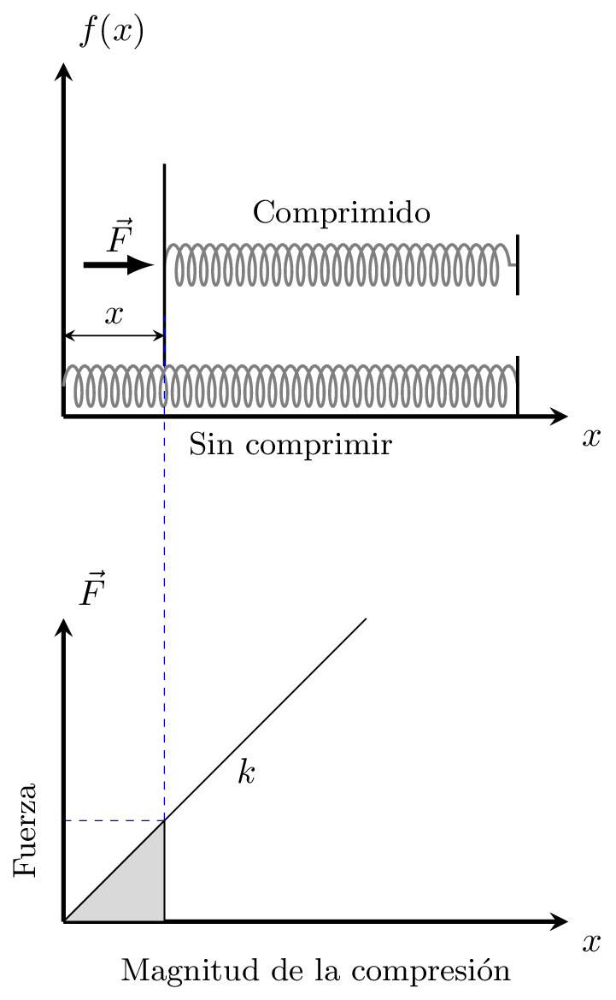
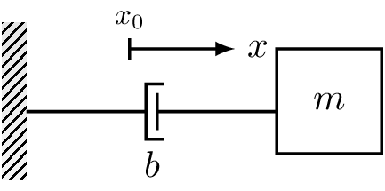
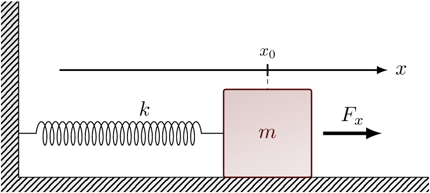
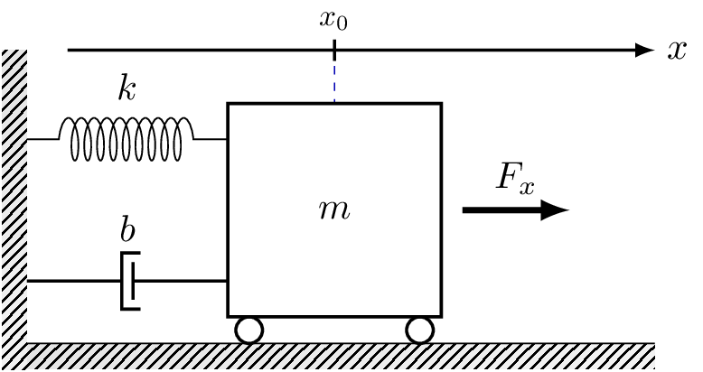
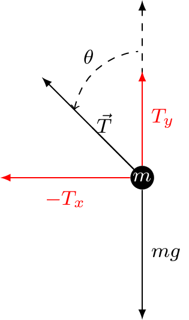

Modelado de sistemas mecánicos#
Movimiento de traslación#
Definición 20 (Masa)
Propiedad de un elemento de almacenar energía cinética del movimiento de traslación [Kuo, 1996].
Leyes de Newton#
Definición 21 (Primera ley de Newton)
Un objeto permanece en reposo o se sigue moviéndose con velocidad constante en módulo y dirección si ninguna fuerza neta actúa sobre el objeto [Kane et al., 1989].
Definición 22 (Segunda ley de Newton)
La fuerza \(\vec{F}\) necesaria para producir una aceleración \(\vec{a}\) está dada por la siguiente expresión [Kane et al., 1989]
o en término de sus componentes como sigue
donde \(m\) es la masa del objeto.
Definición 23 (Tercera ley de Newton)
Para toda acción, existe una fuerza de reacción de igual magnitud pero en sentido contrario, donde las fuerzas de acción y reacción actúan sobre objetos diferentes [Kane et al., 1989].
Ley de Hooke#
Definición 24 (Ley de Hooke)
La fuerza requerida para estirar o comprimir un resorte \(x\) unidades de longitud a partir de su longitud natural es proporcional a \(x\) como sigue [Thomas et al., 2005]
donde \(k\) denota la constante del resorte o constante de fuerza del resorte.
{kind=link}

Figura 2 La fuerza \(\vec{F}\) requerida para estirar o comprimir un es proporcional al desplazamiento en \(x\).#
Fricción para el movimiento de traslación#
Existen tres tipos de fricción que se pueden encontrar en sistemas prácticos: fricción viscosa, fricción estática y fricción de Coulomb las cuales definiremos a continuación.
Definición 25 (Fricción viscosa)
Según Kuo [1996], este tipo de fricción representa una fuerza que es una relación lineal entre la fuerza aplicada y la velocidad.
Suele representarse como un amortiguador como se muestra en la Figura 3 y su expresión matemática está dada como sigue
donde \(b\) denota el coeficiente de fricción viscosa.
{kind=link}

Figura 3 Representación gráfica de un amortiguador para fricción viscosa.#
Definición 26 (Fricción estática)
Es una fuerza que previene el movimiento desde el inicio [Kuo, 1996] y está representada por la siguiente ecuación
Este tipo de fricción sólo existe cuando el cuerpo se encuentra estático pero puede moverse. Aquí, el signo de la fricción representa la dirección del movimiento o bien, la dirección inicial de la velocidad.
Definición 27 (Fricción de Coulomb)
Es una fuerza que posee una amplitud constante con respecto al cambio de la velocidad. Sin embargo, el signo de la fuerza de fricción cambia al invertir la dirección de la velocidad [Kuo, 1996]. La relación para este tipo de fricción está dada como sigue
donde \(F_{c}\) denota el coeficiente de la fricción de Coulomb.
Definición 28 (Movimiento de rotación)
Se define como el movimiento alrededor de un eje fijo. Nos dice que está la suma de los momentos o pares alrededor de un eje fijo es igual al producto de la inercia por la aceleración angular
donde \(J\) denota la inercia, \(a\) la aceleración angular. Otras variables utilizadas para el movimento rotacional son: par (\(\tau\)), velocidad angular (\(\omega\)) y desplazamiento angular (\(\theta\)).
Definición 29 (Inercia)
Propiedad de un elemento de almacenar energía cinética del movimento de rotación. Depende de la composición geométrica al rededor del eje de rotación.
La ecucación que describe el par aplicado a un cuerpo con inercia \(J\), está dada como sigue
donde \(\theta(t)\) es el desplazamiento angular, \(\omega(t)\) la velocidad angular y \(\alpha(t)\) la aceleración angular.
Sistema masa-resorte#
Considere una masa \(m\) que se desliza sobre una superficie horizontal y que se encuentra sujeta a una superficie vertical a través de un resorte con constante de fuerza \(k\) como se muestra en la Figura 4.
{kind=link}

Figura 4 Diagrama del sistema masa-resorte.#
Si definimos \(x\) como el desplazamiento desde el punto de referencia \(x_{0}\); asumimos que la masa se desplaza sin fricción y aplicamos la Segunda ley de Newton así como la Ley de Hooke obtenemos
Dado que la aceleración \(a\) está definida como \(\ddot{x}\) y que la fuerza \(F_{x}\) está a nuestra disposición, sustituimos en la ecuación anterior para obtener el modelo del sistema masa-resorte como sigue
Para un desplazamiento largo, la fuerza restauradora (\(kx\)) podría depender de manera no lineal de \(x\), por ejemplo, expresada por la siguiente función
representa al modelo llamado softening spring, donde un gran incremento de desplazamiento produce un incremento pequeño de fuerza.
Por otro lado, si tenemos la siguiente función
es posible obtener el modelo llamado hardening spring donde un incremento pequeño de desplazamiento produce un gran incremento de fuerza.
Modelado a partir del enfoque Euler-Lagrange#
Cualquier sistema debe satisfacer las ecuaciones de Lagrange dadas por
donde \(\mathcal{L}\) es el Lagrangiano del sistema y se define como sigue
Además
\(U\), representa la coenergía total en las reservas de flujo del sistema expresada como una función de las coordenadas de esfuerzo generalizado.
\(T\), la energía total en los almacenes de esfuerzo del sistema expresada como una función de las coordenadas de acumulación de esfuerzo generalizadas.
\(J\), el co-contenido total en los disipadores del sistema expresado como una función de las coordenadas de esfuerzo generalizado.
\(q\), el vector de coordenadas generalizadas definida como el conjunto de coordenadas linealmente independientes que definen la configuración del sistema.
Para un sistema mecánico no conservativo, las ecuaciones de Lagrange están dadas como sigue
donde \(\tau_{j}\) denota las fuerzas generalizadas.
Importante
En este contexto conservativo significa libre de disipación y entradas de fuerzas externas.
Definición 30 (Masa traslacional)
Una masa traslacional pura es un objeto rígido el cual se mueve a través de un entorno no disipativo. De acuerdo con la Segunda ley de Newton, el momento \(p\) de la masa está linealmente relacionado a la velocidad del objeto como se da a continuación
donde \(m\) es la masa Newtoniana del objeto. El momento \(p\), está definido por
donde \(F\) denota fuerza.
De acuerdo con la analogía de movilidad, la cantidad de momento es formalmente análoga a la acumulación de flujo. Por lo tanto, una masa pura translacional puede ser clasificada como un almacenamiento de flujo.
La masa Newtoniana, tiene una relación constitutiva lineal intríseca, por consiguiente, la energía almacenada \(U\) (energía cinética) es igual
Definición 31 (Resorte traslacional)
Es un objeto mecánico que cuando está sujeto a una fuerza se comprime o alarga sin aceleración significativa de sus componentes, o pérdida de energía debido a la fricción o falta de la deformación. El mecanismo de almacenamiento de energía de un resorte puro es el desplazamiento neto del resorte desde su estado de reposo. Por lo tanto, la variable desplazamiento se define como
Un resorte lineal ideal obedece la ley de Hooke y tiene una relación constitutiva
donde \(k\) se conoce como la rigidez del resorte.
De acuerdo con la analogía de movilidad, un resorte es un almacén de esfuerzo, ya que el desplazamiento representa una acumulación de la variable esfuerzo (velocidad). Por lo tanto, la energía almacenada en un resorte es \(T\) (energía potencial) y puede ser evaluada por la siguiente relación constitutiva
Definición 32 (Disipación traslacional)
Un disipador puro es aquel en el que los fenómenos de almacenamiento de energía cinética y potencial están ausentes. Por lo tanto, un objeto rígido y liviano que se mueve a través de un fluido viscoso o se desliza sobre una superficie rugosa tendrá una relación constitutiva que relaciona estáticamente la fuerza aplicada y la velocidad relativa del objeto.
La potencia absorbida por un disipador es el producto de las variables esfuerzo y caudal, y se obtiene de la relación constitutiva como la suma del contenido y cocontenido del disipador. La relación constitutiva de un disipador lineal está dada como sigue
En este caso, vamos a tratar de obtener el modelo dinámico del sistema masa-resorte utilizando las ecuaciones de Euler-Lagrange. Para ello, definimos la siguiente coordenada generalizada
Expresamos las energías en función de la coordenada generalizada para obtener el Lagrangiano del sistema. Donde, la energía potencial del sistema se obtiene a partir de la siguiente relación
Sustituyendo la Ley de Hooke en (10), tenemos
mientras que la co-energía cinética está dada como sigue
Por consiguiente, el Lagrangiano del sistema se define como sigue
Calculando las ecuaciones de Lagrange (9) a partir de la Ec. {eq}`eqn:Lagrangiano_mr, obtenemos
Finalmente, sustituimos las Ecs. (12) y (13) en la Ec. (9)
Sistema masa-resorte-amortiguador#
Considere el sistema masa-resorte-amortiguador mostrado en la Figura 5. Dicho sistema consiste en una masa \(m\) sujeta a un elemento de amortiguamiento con constante de viscosidad \(b\) y un resorte con rigidez \(k\). Podemos observar que el sistema se desplaza sobre un plano horizontal a partir de una fuerza \(F_{x}\) aplicada.
Podemos partir del modelo dado en la Ec. (7) y modelando el amortiguador con la relación dada en la Ec. (6), tenemos
De manera análoga, podemos obtener aplicar las ecuaciones de Lagrange {eq}`eqn:sistema_no_conservativo considerando que existe una fuerza de fricción viscosa como sigue
{kind=link}

Figura 5 Sistema masa-resorte-amortiguador.#
Péndulo simple#
Considere el péndulo simple mostrado en la Figura 6

Figura 6 Péndulo simple.#
donde \(l\) denota la longitud de la barra, y \(m\) la masa de la bola. Asuma que la barra es rígida y de masa despreciable. Suponga entonces, \(\theta\) como el ángulo entre la barra y el eje vertical a través del pivote. Además, el péndulo se mueve libremente sobre un plano vertical formando un círculo de radio \(l\). Para obtener la ecuación que describe el movimiento del péndulo es necesario identificar las fuerzas que interactúan sobre la bola o bien, utilizar el enfoque de Euler-Lagrange.
Modelado a partir de leyes físicas#
En un sistema mecánico de tipo rotacional, las leyes físicas que rigen el sistema están dadas por la Segunda ley de Newton, donde las fuerzas positivas están dadas hacia la derecha mientras que las negativas hacia el lado contrario. Si realizamos un diagrama de cuerpo libre para observar las fuerzas que interactúan con la masa como se muestra a continuación
{kind=link}

Figura 7 Diagrama de cuerpo libre de la masa en el péndulo simple.#
Podemos observar que hay una fuerza gravitacional \(mg\), donde \(g\) es la aceleración de la gravedad. Así mismo, existe una fuerza de tensión \(\vec{T}\) con componentes \(T_{x}\) y \(T_{y}\).
Podemos observar que la única fuerza que interactúa en \(x\) es \(T_{x}\). Recordando que esta tensión tiene una fuerza negativa, por lo tanto la definimos como sigue
donde \(T\) denota la magnitud de la tensión y \(\ddot{x}:=\frac{\mathrm{d}^{2}x}{\mathrm{d}t^{2}}\).
Para el análisis de las fuerzas que interactúan en el eje \(y\), tenemos
Observamos entonces que tenemos dos variables que ecuaciones. Por ello, vamos a relizar el siguiente despeje
Sustituyendo (16) en (15), tenemos
Simplificamos la expresión obtenida multiplicando ambos lados de la igualdad por el término \(\sin(\theta)\) y resulta
Observando el diagrama de la Figura 6, tenemos que la posición de la masa está dada por sus componentes \(x\) e \(y\) dentro de un plano cartesiano. Así mismo, tenemos que \(l\) y \(\theta\) están en un sistema de coordenadas polares. Por lo tanto, podemos utilizar la relación que hay entre estos sistemas para establecer las siguientes relaciones
Puesto que necesitamos la aceleración a lo largo del eje \(x\) e \(y\), derivamos la expresión dada en la Ec. (19) recordando la regla de la cadena (ver Teorema 12)
Sustituyendo (20) y (21) en (18)
Suponiendo que hay una fuerza proporcional a la velocidad de la masa con un coeficiente \(k_{f}\) que resiste el movimiento, el modelo de péndulo simple con fuerza de fricción} queda dado por la siguiente ecuación
Por lo tanto, la dinámica del péndulo simple con y sin fricción están dadas por ecuaciones diferenciales de segundo orden. Para resolver las Ec. (23) y (24) realizamos un cambio de variable y definimos como variables de estado \(x_{1} = \theta\) y \(x_{1} = \dot{\theta}\). Por consiguiente, el sistema queda representado como sigue
Una variante del sistema de péndulo simple se puede obtener agregando una entrada exógena \(\tau\)
Modelado a partir del enfoque Euler-Lagrange#
El sistema mostrado en la Figura 6, sólo posee un grado de libertad denotado como \(\theta\). Entonces, definimos las siguientes coordenadas generalizadas
Además, definimos como fuerza generalizada la variable \(u\), i.e.
Ahora bien, podemos representar la Ec. (19) en forma vectorial como sigue
y el vector de velocidad (20) como sigue
La energía co-cinética del sistema está dada por
mientras que la energía potencial del sistema por
donde \(\vec{g} = \begin{bmatrix} 0 & g \end{bmatrix}^{T}\), con \(g \in \mathbb{R}^{2}\).
Sustituyendo (27) en (28), tenemos
Ahora, sustituyendo (26) en (29)
Entonces, el Lagrangiano del sistema se define como sigue
Obtenemos las derivadas parciales
Sustituyendo, (30)-(32) en (9) y considerando que \(\tau=0\) tenemos